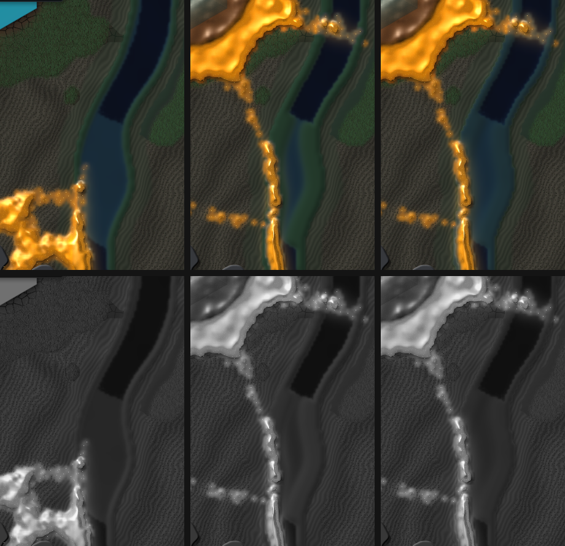
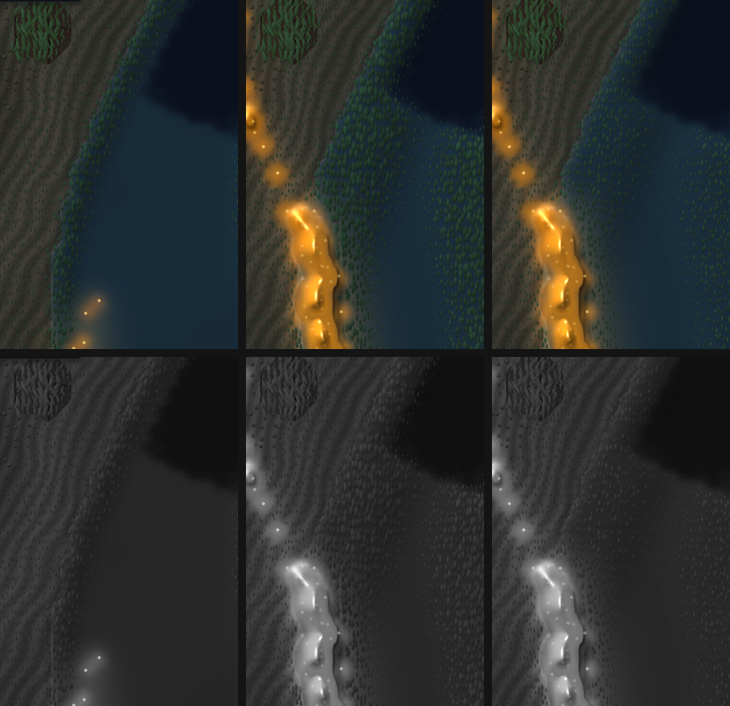
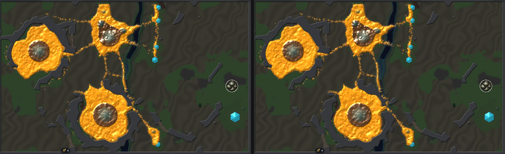

<title>Rivers Under Reeds</title>
<meta name="claude:viewport-fit-sides" content="cover">
<link rel="stylesheet" href="https://fonts.googleapis.com/css2?family=Inter:wght@400;600&family=Space+Grotesk:wght@500;700&display=swap">
<style>
:root {
  --bg: #f3f4f1; --fg: #1d221d; --muted: #5b645a; --line: #d5dad2; --accent: #1f5f8b; --leaf: #2f5a3a;
  --display: "Space Grotesk", "Segoe UI", system-ui, sans-serif;
  --body: "Inter", "Segoe UI", system-ui, sans-serif;
}
@media (prefers-color-scheme: dark) { :root:not([data-theme="light"]) { --bg: #121512; --fg: #e4e8e2; --muted: #9aa597; --line: #2b322b; --accent: #7ab8e0; --leaf: #8fc09a; color-scheme: dark } }
:root[data-theme="dark"] { --bg: #121512; --fg: #e4e8e2; --muted: #9aa597; --line: #2b322b; --accent: #7ab8e0; --leaf: #8fc09a; color-scheme: dark }
body { background: var(--bg); color: var(--fg); font-family: var(--body); line-height: 1.55; margin: 0; }
main { max-width: 760px; margin: 0 auto; padding-block: 32px 48px; padding-left: max(16px, env(safe-area-inset-left, 0px)); padding-right: max(16px, env(safe-area-inset-right, 0px)); display: grid; gap: 28px; }
h1, h2 { font-family: var(--display); text-wrap: balance; margin: 0; }
h1 { font-size: 2rem; } h2 { font-size: 1.25rem; }
p { margin: 0; max-width: 65ch; }
.eyebrow { text-transform: uppercase; letter-spacing: .08em; font-size: .75rem; color: var(--leaf); font-weight: 600; }
section { display: grid; gap: 10px; }
figure { margin: 0; display: grid; gap: 8px; }
figure img { width: 100%; height: auto; border-radius: 6px; border: 1px solid var(--line); }
figcaption { color: var(--muted); font-size: .9rem; }
.table { overflow-x: auto; }
table { border-collapse: collapse; font-variant-numeric: tabular-nums; font-size: .9rem; min-width: 420px; }
th, td { text-align: left; padding: 6px 12px 6px 0; border-bottom: 1px solid var(--line); }
th { font-weight: 600; color: var(--muted); }
</style>
<main>
  <header style="display:grid;gap:8px">
    <div class="eyebrow">Larder World · plants thread · 2026-11-15</div>
    <h1>Rivers Under Reeds</h1>
    <p>Reeds spread over a river's shallows in the first two minutes, and the river vanished: zoomed in, their stems closed over the water; zoomed out, the shallows turned a green wash. Now plants over water are drawn thinner so the water shows between them, nothing is drawn over deep water, and the far view's green is veiled over water. Only the look changed: the reeds still grow there and burn. Planet 4 seed 1 (river valley), squad idle, filmed in the game on software Vulkan, cropped and not scaled.</p>
  </header>

  <section>
    <h2>Zoom 4</h2>
    <figure>
      
      <figcaption>Left to right: 2 s, then 120 s before, then 120 s now. Colour is above and grey below.</figcaption>
    </figure>
  </section>

  <section>
    <h2>Zoom 12</h2>
    <figure>
      
      <figcaption>The same three moments up close. Now the reeds over the shallows are small stems with water between them, and the deep channel stays clear.</figcaption>
    </figure>
    <div class="table"><table>
      <tr><th>Blue share of the river window</th><th>2 s</th><th>120 s before</th><th>120 s now</th></tr>
      <tr><td>Zoom 12</td><td>0.558</td><td>0.355</td><td>0.457</td></tr>
      <tr><td>Zoom 4</td><td>0.177</td><td>0.074</td><td>0.165</td></tr>
    </table></div>
    <p>The window also holds banks, and by 120 s some slime crossing the river. Cost on software Vulkan: the view's main pass went from 74.1 to 74.7 ms, which is within noise.</p>
  </section>

  <section>
    <h2>The whole planet at 120 s</h2>
    <figure>
      
      <figcaption>Before on the left, now on the right. The two frames differ in where the camera opens, not in the map.</figcaption>
    </figure>
  </section>
</main>
